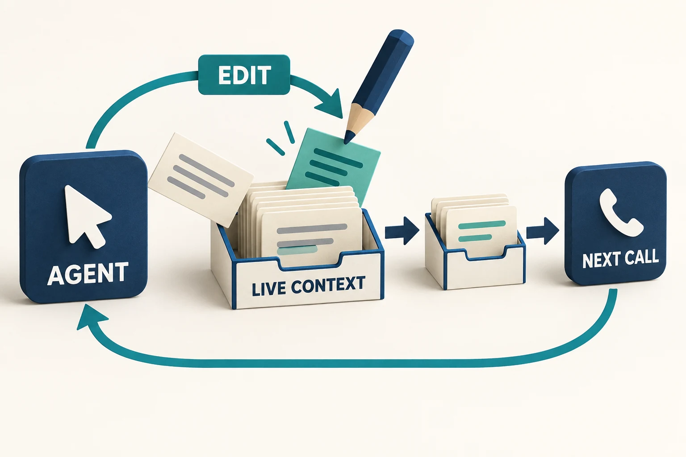
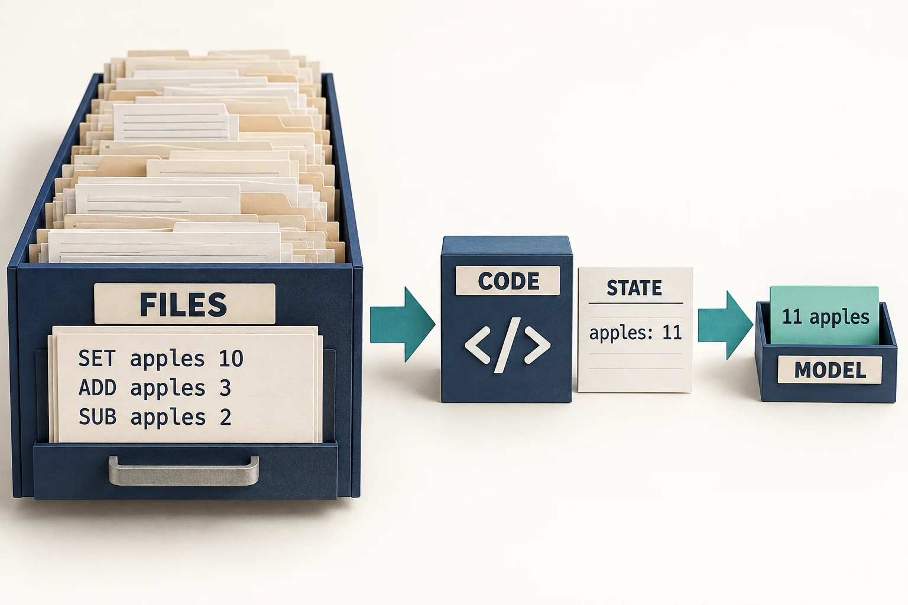
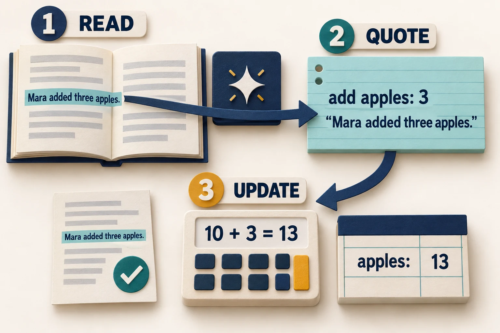

Ways to work with more context
A visual guide to keeper, self-editing, files and quoted events.
The difference is what survives when old text leaves the window, and who decides. Cropping keeps recent turns. Summarising keeps a rewritten account. Archives preserve originals; self-editing changes the working context; a keeper manages that work outside the agent.
1. Keeper: manage the memory outside the agent
The agent continues its task. Before its context overflows, the surrounding software saves old turns, refreshes notes and makes room.

- Archive first. Save the oldest turns word for word.
- Refresh the notes. In a separate call, the same model reads the previous notes and outgoing turns, then writes RULES, STATE and OPEN. No tools are available in that call.
- Continue with a smaller view. Keep recent turns and notes in context. Restore omitted rules, repeat them at the point of use, and allow archive searches.
A faster way to keep the notes. In-place notes ask for the changes only, at the end of the conversation the server has already read, and then empty the window down to the task and the notes. Over a million tokens that took 50 minutes in place of 83, with all 228 answers right. In-place notes, and an audit of the notes.
The proxy is the same policy packaged between the client and server. The client sends its full history; the model receives the smaller view. The proxy also answers the model's archive searches.
What helped: exact originals remain available, while rules do not depend on a later search. What can fail: incomplete notes, a missed search or an incorrectly interpreted passage.
2. CLM: let the agent edit what it sees next
CLM means Context Language Model. The application exposes the conversation as an editable file. When the model edits that file, the next call receives the changed conversation.


For example, “10 apples” and “add 3” can become “apples: 13.” The agent chooses which messages to replace, keep or remove. The lab's revised approach adds a protected state and a routine for updating it before dropping each batch.
What helped: compact state and checked update code completed both 121K ledger seeds correctly. What can fail: a current total loses the history behind it unless the originals are also saved. CLM can use an archive; the context-only restriction was a rule of particular lab tests.
CLM, keeper and the measured results · The protected-state revision
3. Files and code: keep the records, calculate the answer
The agent saves incoming records and writes a script to update a state file. Tools return the total or a small excerpt; the model does not have to read the entire archive.


Best fit: structured updates with clear rules. The file agents answered every question on the 121K ledger in 1.9 minutes. That advantage shrank on prose that needed interpretation, and an unguarded file agent ran out of context on a harder retention test.
4. Quoted events: let the model read, let code keep the books
The model turns a narrative change into a structured event with an exact supporting quotation. The application checks the quote and applies the arithmetic to a saved table.


This divides two jobs: understanding prose and maintaining exact balances. Original batches also remain in a read-only archive. Unlike keeper, it uses a task-specific event format and an explicit per-batch routine.
Same million-token narrative task, seed 0, 32K budget; 24 final questions. These are the original matched runs; fixed-checker reruns and intermediate-state checks are recorded in the detailed results.
This is a different task from the keeper's 228-question history test.
What can fail: a valid quote does not prove that the event was interpreted correctly or that every relevant event was found. Later tests checked intermediate states too; correct balances still did not guarantee correct answers about changing owners.
Narrative-reading benchmark · State and historical-question checks
Where the familiar approaches fit
- Cropping / window-drop
- Keep the recent conversation and discard the oldest turns. Simple, but facts outside that window are gone.
- Tool-output compaction
- Replace old tool results with short stubs and remove old thinking. Here compaction means this specific baseline, not every kind of context reduction.
- Retrieval only (RAG)
- Put everything in a store and show the best-matching sentences when a question arrives, with no notes. It kept up with the keeper on the 240K histories. Late in the million-token history it fell behind and lost the standing rule 4 times in 29. Added to the keeper, it helped on a harder history: the two together.
- Summarising
- Replace older turns with a model-written handover. Useful when it keeps the needed facts; an archive provides a way back to omitted details.
- A larger window
- Keep more source text in view. Try this when it fits, while accounting for memory use and slower generation.
- Prefix caching
- Reuse the computation for an unchanged beginning. It speeds repeated reading; it does not enlarge the window or rescue discarded facts.
Same plain 240K-token history, seed 0, 32K budget; 29 questions. This test has no standing-rule questions and is separate from the keeper comparison.
Full method comparison, including cleanup and disk cache
| Approach | What changes, and the result |
|---|---|
| Bigger active window | Holds more text at once. The window opened to 262K positions; longer active context slowed generation. |
| Exact prefix cache | Reuses the unchanged start. Repeat questions began sooner; writing stayed near 89 tokens/s in the standard check. |
| Suffix cache reuse (CLM paper) | Also reuses cached text after an edit, approximately. Not used here; answers would depend on edit history. |
| Files, no context editing | Code reads saved records and keeps the totals. 24/24 in 1.9 minutes on the 121K ledger. |
| Files, editing available | Adds permission to rewrite the conversation. 24/24 in 1.9 minutes on the 121K ledger; no edit was needed. |
| CLM self-editing | Rewrites selected parts of the working history. Original agent: 19/24 in 64 minutes; its harness lost five delivered batches. |
| Periodic summaries | Replaces old history with a short account. It got 24/24 in 41 minutes on the 121K ledger; making summaries added work. Over a 240K history at a 32K window it was the slowest method and scored below simply dropping old turns (23/29 against 25/29, one seed). |
| Revised self-editing | Protects incoming batches and pins the current state. 24/24 and 21/24 on two 121K runs; 24/24 on a 478K stream. |
| Remove old thinking | Drops earlier reasoning from later calls. One ledger run repeatedly rebuilt its state and returned no answer after 2.6 hours. |
| Park a cache on disk | Saves an inactive session for later restoration. Save/restore takes time; not benchmarked here. |
| Stream active cache from disk/RAM | Trades repeated transfers or CPU work for capacity. Requires engine support; not benchmarked here. |
| CPU text cleanup | Removes repetition and formatting noise. Conservative cleanup reduced tokens by 1.83%. |
| Archive and search | Moves dropped text word for word to a searchable archive. 36/36 on the retention test in 6.1 minutes; the best score on both seeds over a 240K history at a 32K window (63/65 pooled). It needs a pinned place for rules to keep one. |
| Compaction (stub old tool output) | Replaces old tool output with stubs. Cheap, but it lost “who did it” details and, on one of two seeds at 32K, reported six old values as current. |
| Keeper (managed from outside the agent) | The agent manages nothing. Something outside it archives the oldest turns word for word, has the model rewrite a short notes block at each cut, and repeats the rules where questions arrive. 39/39 and 46/46 on two 240K streams at a 32K window; 226/228 over 1,000,000 tokens (one stream). |
| Keeper with in-place notes | The same keeper with cheaper notes. The note-taking call reuses what the server has already read, the model writes only what changed, and the window is then emptied down to the task and the notes. 39/39 and 46/46 on the two 240K streams in 9.9 and 10.0 minutes; 228/228 over 1,000,000 tokens in 50 minutes, against 83 for the full rewrite (one stream). |
| Retrieval only (RAG) | No notes. Every sentence goes into a store, and the best matches are shown when questions arrive. 39/39 and 45/46 on the two 240K streams; over 1,000,000 tokens 189/203 of the questions asked along the way, and the final 25 not answered (a stopped run). |
| Keeper with retrieval added | The keeper with in-place notes, and the best-matching stored sentences shown with each set of questions. On a harder 240K stream, 47/50 and 46/50, against 42/50 with notes only (one seed, exploratory). On the second ordinary 240K stream, 46/46 in 11.2 minutes. Not yet run over 1,000,000 tokens. |